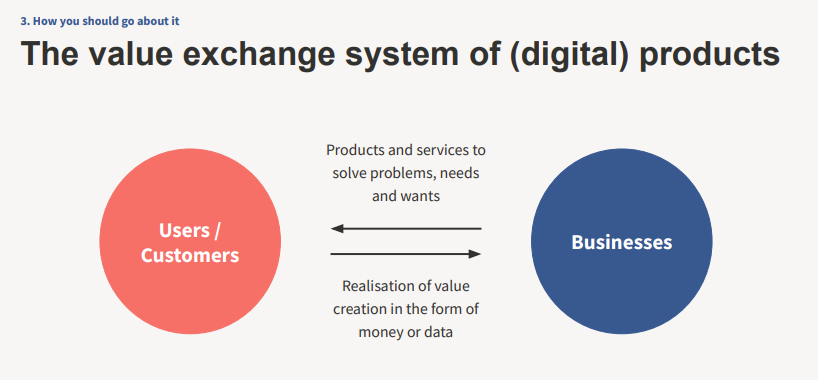
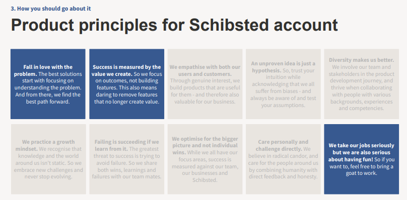
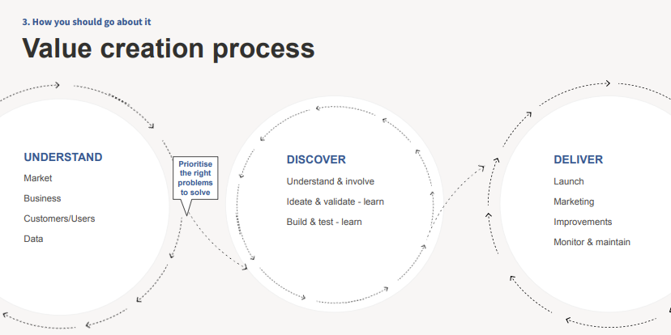
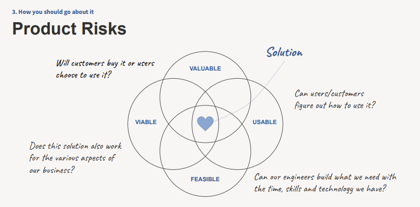
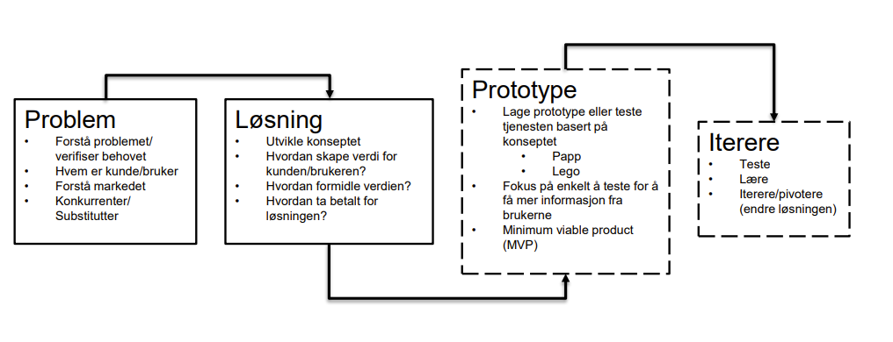
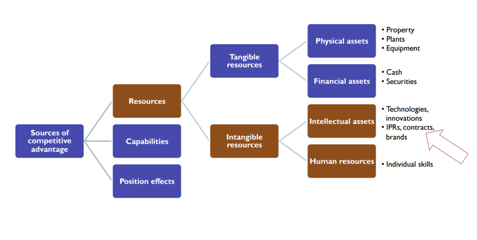
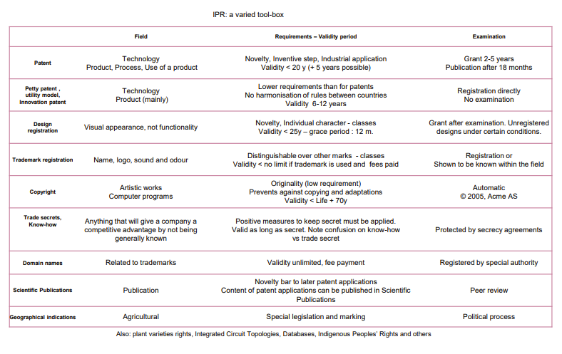

Lecture notes (incomplete)
Entreprenørskap 1
Entreprenørskap handler om å forstå problem, se muligheter, finne løsninger, og ta grep for å sette disse løsningene ut i livet.
Examination of how, by whom, and with what effects opportunities to create future goods and services are discovered, evaluated, and exploited. (Shane & Venkataraman, 2000)
Entreprenørielle muligheter kan:
- Gjenkjennes
- Oppdages
- Skapes
Entreprenørskap som tankesett
- Å gjøre - læring gjennom egne erfaringer
- Å samhandle - læring i interaksjon med andre
- Å utfordre - læring gjennom å arbeide med problemstillinger fra verden utenfor universitetet
- Å omfavne usikkerhet - læring gjennom å være i situasjoner der framgangsmåter og løsninger ikke er gitte
- Å reflektere - læring gjennom å reflektere og søke forstå egne erfaringer.
Hva er et problem?
Vi har et problem når vi har et mål, men er usikre på hvordan vi skal nå dette målet (Kaufmann, 1998)
Umedgjørlige problem
- Vanskelig å avgrense
- Unike problem med ukjente utfordringer
- Komplekse og flerfoldige årsaker
- Ingen entydige eller opplagte løsninger
- Løsninger krever kreativitet, utforskning og eksperimentering for å kunne løses
- Vanskelig å fullt ut forstå virkningene av potensielle løsninger i forkant
- Alle forsøk på løsninger kan ha uoverskuelige og irreversible konsekvenser
Forstå problemet
- Hvem har dette problemet?
- Hvor stort er dette problemet for dem?
- Hvordan løser de problemet i dag?
- Hva er de villig til å betale for å løse problemet?
Pivoting: Det grunnleggende problemet endrer seg ikke, men vår forståelse og våre løsninger (kan) endre seg
Hva er et marked?
- Sted (fysisk eller på annen måte) hvor kjøpere og selgere møtes, forhandler og handler med hverandre
- Ting som selges i ett marked kan være billigere eller dyrere enn noe som selges i et annet marked på samme tid
- Hvorfor er markeder forskjellige?
- Alle aktører har ikke tilgang til samme informasjon på samme tidspunkt
- Kan lede til prisforskjeller, og dermed til profittmuligheter
- Arbitrage-muligheter
- Både tilbud og etterspørsel eksisterer allerede
- Kan utnyttes ved å sette opp en franchise
- Kun én side av markedet eksisterer
- Enten tilbud eller etterspørsel
- Verken tilbud eller etterspørsel
eksisterer i markedet
- En eller begge må skapes
4 typer entreprenørskap
Starte NY bedrift
- Starter ny oppstartsbedrift ut i fra forretningsidé
- Formål: Verdiskaping
- Fordeler/Ulemper:
- Frihet
- Fokus
- Vanskelig finansiering
- Personlig kostnad
Entreprenørskap i etablert bedrift
- Corporate entrepreneurship eller forretningsutvikling, intraprenørskap
- Entreprenørskap i allerede etablerte selskaper
- Fordeler: Kan være enklere tilgang til:
- Finansiering
- Kompetanse og nettverk
- Ressurser
- System og etablert organisasjonsstruktur
- Ulemper: Kan være vanskeligere å få til:
- Fokus
- Selvstendighet
- Prioritering i dårlige tider
Sosialt entreprenørskap (Frivillig organisasjon)
- Ny løsning på sosialt problem - idé med samfunnseffekt
- Kun frivillig arbeid (not-for-profit) eller en mellomting
- Støtte fra private aktører eller bidrag fra offentlige instanser
- Dobbel bunnlinje
- Sosialt aspekt i alle bedrifter fremover
- Licence to operate
- Forventes av kunder og partnere
Nødvendighetsbasert entreprenørskap (Entreprenørskap for å overleve)
- Necessity Entrepreneurs,Microenterprises
- Entreprenørskap som ledd i å skape egen arbeidsplass
- Sørge for inntekt
- Særlig vanlig i utviklingsland
- Lite kapital til utvidelse
Product Management: What it is, why it matters and how you should go about it (Schibsted)
Building the right thing is really hard, pitfalls:
- Technologies in search of a problem
- Technologies addressing too small a problem
- Technologies not best solving a real problem
- Technologies not solving the real problem they say they solve
- Technologies used to solve a problem not needing solving




Mulighetsanalyse
Også kalt syretest. Skal svare på spørsmålet:
Bør vi gå videre med denne muligheten?
Finnes sjekkliste for mulighetsanalyse (se slides). Ikke nødvendig til rapporten.
For prosjektet er et nei like godt som et ja.
Hva er verdi?
Klarer bedriften å skape noe som er mer verdt enn summen av innsatsfaktorene?
Den opplevde nytten av produktet må være høyere enn prisen bedriften tar for produktet.
Unikt verdiforslag: skjæringspunktet mellom "det kunden trenger og bryr seg om" og "det bedriften gjør skikkelig bra"
Hva er markedsanalyse?
Systematisk innhenting, registrering og analyse av data i tilknytning til markedsføring av varer og tjenester.
Inkluderer analyse av:
- Markedssegmenter
- Kunder og brukere
- Produktspekter
- Distribusjonkanaler
- Prissetting
Hensikt: TODO
Segmentering
-
Mulige segmenteringskriterier
- Forbrukermarkeet (B2C) eller bedriftsmarkedet (B2B)
- Geodemografi
- Person-/situasjonssegmentering (jobb/fritid)
- Behovssegmentering
- Psykografisk segmentering (livsstil)
-
Personas (ikke nødvendig, men evt. fint tillegg i rapporten)
- Beskriver en fiktiv typisk bruker (enkeltperson) som er representativ for gruppen
- Spesifiserer hvilke målsetninger, behov og utfordringer
Don't try to make a product for everybody, because that is a product for nobody.
- Hva er viktig for kunden?
- Ulike segment betyr ulike kundebehov.
- Kan også være viktig å skille mellom kunden og brukeren.
Markedundersøkelser
Lag grunnhypoteser om produktet dere vil undersøke om stemmer.
- Hvordan finne/samle informasjon?
- Primærdata (samlet spesielt inn for å belyse problemstillingen)
- Intervjuer
- Spørreundersøkelser
- ...
- Sekundærdata (innsamlet for et annet formål enn vår aktuelle studie)
- Primærdata (samlet spesielt inn for å belyse problemstillingen)
Stegene i en mulighetsanalyse

Entreprenørskap 4 - Konkurransefortrinn og IPR


Skrive om immatrielle rettigheter? Nevne D.J. Teece.
| IPR | Tid å få | Varighet | Kostnad NOK |
|---|---|---|---|
| Patent | Flere år | 20 år | 100 000 ++ |
| Varemerke ® | Måneder | Uendelig | 10 000+ |
| Design | Måneder | 25 år | 10 000+ |
| Opphavsrett © | 0 | 70 år+ | 0 ++ |
| Databaserettigheter | 0 | 10 år+ | 0 ++ |
| Forretningshemmelighet | 0 | ukjent | +++ |
Økonomi
Begreper
| Begrep | Definisjon |
|---|---|
| Utgift | Lover å betale |
| Utbetaling | Når man betaler |
| Kostnad | Forbruk |
Mikroøkonomi: Inntekter, kostnader og profitt
Kostnader
Kostnader = Ressursbruk
- Material
- Manpower
- Machines
- Miscellaneous
- Money
Variable kostnader varierer med mengden*. Faste kostnader er den samme uavhengig av mengden. *Hvor vi mye produserer.